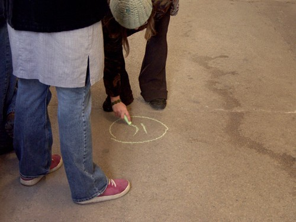

Jennifer Karmin
Poetry Goes Public: Notes on Walking Poem
Does man love Art? Man visits Art, but squirms.
Art hurts. Art urges voyages–
- The Chicago Picasso, written by Gwendolyn Brooks for the unveiling of the statue, August 15, 1967
Poetry needs to find its public again, and address it.
- American Poetry in the New Century, written by John Barr, President of the Poetry Foundation, for Poetry magazine, September 2006
I wanted to navigate a city using writing as my map. During October 2006, I sent out a call for submissions with the goal of gathering writing about walking in cities. I specified that the writing could be about any city and take any shape or form. In addition to their writing, I asked contributors to send me a number from 1 to 92, and a direction: forward, backwards, right or left. My plan was to take all the writing I received and perform Walking Poem for the 1st annual Chicago Calling Festival. The festival showcases collaborative projects between Chicago-based artists and artists living elsewhere, in the U.S. and worldwide. Founder Daniel Godston chose Pablo Picasso’s birthday, October 25th, to be the date for the inaugural festival. I chose the Chicago Picasso sculpture, located in Daley Plaza, as a starting point for my Walking Poem navigation. 50 feet high and weighing 162 tons, it was the first major public art piece in downtown Chicago. Picasso refused to accept the $100,000 fee for this work, stating that he wanted to give a gift “to the people of Chicago.”
Walking Poem began at 12pm, the beginning of lunch hour. I held up a hand-written sign with “Walking Poem” printed on it, thinking of myself as a Poetry Tour Director for the day. While a mix of people assembled, I read aloud the opening piece of writing. It is the only part of Walking Poem that is not a submission, Gwendolyn Brooks’ commemorative poem The Chicago Picasso. I then read the first submission aloud. Inspired by Picasso’s gesture, I gave it away to a passing pedestrian. The interaction was fast and the woman happily took the free poem. After, I walked the suggested number of steps in the direction given to me by the contributor and repeated the process with the next submission. My limit for the number of steps was 92, as Picasso was 92 when he died. I put all the contributors’ pieces in alphabetical order by last name and before each reading wrote the number of the submission on the sidewalk in chalk. One copy, from which I read aloud, I carried on a clipboard. Another copy, to be given away, was sealed in an envelope labeled “This is for you.”
Walking Poem received 48 submissions and I added one poem of my own. Submissions came from Chicago, around the U.S., and around the world. Contributors are professional writers, students, friends, and various listserv readers. Kathleen Duffy acted as cartographer, documenting each location. It was a durational 3-hour reading with no breaks. We walked in circles, getting close to busy Michigan Avenue, walking near the Chicago River, and ending at 3pm in front of the original Marshall Field’s building. Daniel Mejia took photographs of the performance and people’s reactions. Some people listened and some walked away. Most people smiled and seemed to enjoy receiving a free poem from a stranger. Two older men in suits told me “I don’t like poetry” but others asked if they could come back for another free poem tomorrow.
Emily Abendroth
57, left
The Canter & the Transverse Gallop
a dank hunk meets a damp hump and
jubilant they schmooze, warp apart, artfully
outstrip any gleaning eyes only to reconnoiter
via adroit canticles, groping each others crops
gamboling off, adducing across the sluices
a soppy course of reciprocal limb action
while elsewhere a route-spurned racking horse
urgently performs its willed wiliness, totters at half
stride in a quicksilver instant of cliffside bafflement
favors the shored forefoot to hook its course
though consequent hoovefallings find
the poles of another felt hunger hunkering in
amidst the peat-sweating eskers of bog ash
it takes a couple diggers, skids its tracks, tries
not to be fearless but recognizably seared
nicked up and yet still leaning forward, as if
sensation were volition itself and imagination
not for the stinting, but sprinting rather
until into panting speed, it oftens the thinking
underlain and most swollen within her
a hot minion of still belching waters
a lateral spread, a surfeit of seeing’s clinamen
its subjects already and inevitably exceeded
even as in the process of being constituted
overlapping one another as a dog laps
slurping the agitated waters
galloping loose, solid as nothing and nothing solid
as even through the shell of a chambered nautilus
oozing occurs, an unintegrable overflow
a mayhap slapped upon the apparent ‘round’
following in turn and at a canter the contoured ground
til it jackknifes, a mal-at-ease leanness compressed
all the way to heavy breathing wrestling
all the way to open struggle
Diane di Prima
11, left
what's broke
will take more than steel
or concrete
what's broke
unholy
joy the road
that wasn't supposed
to end .
Letter from the West Village
Jean-Claude's House
Waking at dawn at Jean-Claude's is like waking in a conte-crayon drawing: the buildings all brown & burnt sienna & repeated in the cool pale-charcoal water. This NYC is as close to Europe as I'll get this year & in the summer heat it feels like Rome. I sat at a sidewalk table yesterday and drank an iced espresso in a glass made for champagne or something.
So now I am watching some kind of pleasure boat ply its way south toward the harbor, and hearing the gulls cry in the distance. Last night even up here on the sixteenth floor I cd hear hundreds of birds at sunset. And earlier, on Hudson Street, one raven calling for the longest time for its mate. I heard him/her first & then spotted high on chimneys. Stayed a bit on one & then moved to another spot, restless as New Yorkers. I watched a couple of them (New Yorkers, that is) hear her, but not quite register what they'd heard. Such a distinctive & passionate sound!
I mentally sent greetings to them, the one I could see and the missing mate, from their brethren in San Francisco, & told them they did indeed still rule the world as they suspected, and everywhere kids were being wheeled home from day-care in their strollers & grown-ups were stopping in their office garb to buy some kind of ready-made dinner & the ravens shouted the news of space and mating, and the Dance between the two.
Jennifer Karmin
13, forward
everyone’s head is a new language
coins make music
under the
street
city advice
for free
“the rats
used to be
with the
d i n o s a u r s
the rats
used to be
with the
d i n o s a u r s
and in the future
there’ll still be rats
still be”
push pull
open doors
tall
buildings steal
sky
walkwalkwalkwalk
look up
the woman
dancing
in line at the post office smells like piss
take care
have a good day
you could be the owner
of a brand new
smile

Phayvanh Luekhamhan
31, left
girl on the platform meditating
you wore the smog-filtered sun
as robes for contemplation
shoulders pressed into concrete
in dark perfect smiles your drawn lids
your squat body hummed
like the oncoming train
blurring past you slicked
briefcases, coffee in steel mugs
sweat-stained newsprint
all the reckless chatter of that kind
you subdued the sound of them
with each subsonic breath
you in your New York black
you with the turn-down cap
oh, heliolotrix
blessing each passenger
Erika Mikkalo
71, backwards
SideWalk
Everyone must step on the concrete. [In opposition to a Greek island?] Everyone must stand on their own feet. Feet. Fete. Fate. She discarded the chart and lost the schema. Sir Isaac Newton was hit on the head by one. William Tell(me no secrets I’ll tell you no) shot another from the skull of his child. Think of these things as you eat an apple walking down the street. Toss the core in the gutter. See the trajectory in the air, a yellow dash cartoon line. See the lines for hopscotch, the yellow bands of a basketball court, stenciled on the asphalt of a church parking lot to your left. Glance back – always Lot’s wife – at the core: black and yellow striped hornets have landed. Turn and face the
(strange: ch-ch-ch-changes)
fence.
Put your fingers through the wires. Rock back and forth. Rattle. Rat tail. If rats can’t feed, rats can’t breed. The city’s propaganda shows a black silhouette in red crosshairs. Feel the laser target on the base of your neck. At every step. Step on a crack and break your mother’s. Miss Mary Mac Mac Mac //hypertext portion//
Dressed all in black black black
went down the track track track
The Knife: O, the Shark, he has his
teeth, dear, and he carries them in his
mouth – so MacHeath, he has a knife,
dear, but this knife, no-one sees
(Your Mama) Don’t wear no drawers – I was there when she took them off – She put them on the tracks – The train jumped ten miles back.
Jump. Go ahead and jump. Fear of
heights is not fear of heights: it’s fear of
edges.
Black-eyed Susans grew near the tracks
by the tannery on Ashland. Once I
walked from Division past Belmont and
back.
Back in my old neighborhood I’d walk after midnight, sometimes, once or twice, infected by my intrinsic solitude, a condition so pronounced that it becomes an independent entity. My shadow, my shade, my Siamese twin. My stunt double. Double your pleasure, double your fun. It generally wasn’t much fun. Funny girl. This is my present to you: stuff and nonsense, neologism and free association. I construct magic spells that conjure nothing. A tale told by an idiot. I am the city’s Myshkin. Lake Michigan. On a clear day, you can see forever, or Gary. Skyline at your back. Buildings entirely indifferent to who you are.

Shin Yu Pai
71, left
Meditation on Frank O’Hara
It’s March 16, 1999
and I’m walking down Washington
and the clock on the Leumi Bank
tells me it’s 10:25 in Hebrew
whereas time has stopped altogether
in Mayor Ogden Plaza,
the arms of the motorized Vito Acconci
tied at twelve
granite numbers relegated
to pedestrian benches
and I’m passing through Daley Plaza
noticing for the first time the Joan Mirò
across from the Picasso
the scale of a hunched over elderly woman
resting at the sculpture’s stone base
and I see Icarus, not on the Rue Montparnasse
as in Jack Greene’s poem
a feather on the grate
but at the entrance of La Salle bank
across from which city hall celebrates the holiday
by spraying water the color of artificial shamrocks
from the plaza fountain,
St. Patrick’s Day years ago
when I was sullen and anemic
a girl in public school
too stubborn to wear green
the option of getting punched or kissed
still one and the same
and I walk to the Cultural Center
where a woman asks to see my id when I apply for a job
and I haven’t yet committed to living in Chicago
as my driver’s license reflects,
grown accustomed to a city
where big shoulders refers to meat packers
instead of shoulder pads or beautiful men
and outside in the plaza
children slide down the face of the Picasso
Meredith Quatermain
56, left
Welfare Street
Gore Avenue – track of an old skid
Surveyor General of British Columbia
ran from a True Lagoon
to a place between first and second narrows
the Spanish said people called Sasamat
– no translation –
teals, widgeons, shovelers, buffleheads,
scoters, redheads, golden-eyes
blue herons and the Branta canadensis
lagooned at Ka wah usks – Two Points Opposite
sawmills, sewage, shacktown
till the railways paved it over.
A skid from . . .
Chart-man Richards called it False – not a true creek
the Northwest Passage to Burrard Inlet
for his Plumper. To pierce or wound
run through with a word-spear GARrrrr
Gore Avenue and Keefer Street
iron palings
of Chau Luen tower. Boulders –
hogsize – scraped up from an ice age
Sit here.
Ice in the butt, face in the sun
till the shadow of Fan Towers South
slides across the page.
Steady foot traffic – east side of Gore – gaunt
black-leather-jacket longhairs –
down the skid to Hastings Street – lumbering swaggering
stuffing things in their jeans – gnarled man waving his fist
in, out, round and round his forearm – walking down
to Lower Town
West Side. New Chong Lung Sea Foods
Crowds of shoppers. Shouts of the market men.
A jade vendor and the lady who crochets hats
tucked in doorways/ cracks between buildings
their wares
People have lived here 10,000 years –
Plump! a dozen fans open – brooms beating rugs
Tai chi brush knee –
Cloud-ears pile up a wall – black and curly.
Sacks of dried mushrooms, dried fish and shrimp.
Red roasted seeds. Durian. Prickly fruit.
Barbecue duck and pork. Tanks of crabs, shell-fish.
A shiny fungus you see ledged out from trees
that clouds hear . . .
Round the corner to the wide Hastings Street
Captain Raymur’s mill. Before that Stamp’s.
“What is the meaning of this
aggregation of filth” –
barns of the mill, hodgepodge of lumber sheds,
slag-heaped bark, steam donkeys’ rusted carcasses
scrapped blades and rubber belting – sawdust spit clogging the sea –
the mill-workers’ dogs, chickens, shithouses, shacks –
Gassy Jack’s saloon and hookers,
Civilization’s broken axes, saws, crockery,
junked bottles, tins boots, shoes.
“DEATH to ’Merican freedom,” Raymur said,
“I’ll not permit a running sore to fasten itself . . .”
Brought the workers books, a place to learn.
Maybe even poetry or Dickens. Started Gastown’s first school.
But named the mill for Rear-Admiral George Fowler H . . . ,
commander-in-chief of the vessel Zealous.
Round the corner to the wide Hastings Street
Battle of 1066 –
Men lugging grubby rucksacks.
P U B (as in p, u, b). ATM Liquid Cash.
Drink your money. Here.
Mud-splattered windows and prison bars of the drug store –
before the Weald, a grab-bag of English infantry
destitute of armour but for long-handled Danish axes –
the Normans on Telham Hill with central phalanx and two wings,
archers, infantry, cavalry.
Hastings and Main. The Royal Bank. Pillars, bell-tower, of Carnegie Library.
People up and down the steps to the public toilets.
Hastings and Main. Four Corners. Fair lady works shuttles –
tripartite facade of the Ford Building –
marble balustrades at its light-wells
above Owl Drugs.
And the Four Corners Community Savings
for welfare people, or what passes for wellness and fare.
Paula Rabinowitz
23, backwards
Stairmaster Goes out Walking after Midnight (with Patsy Cline)
From Stairmaster Yeats: An Epic
Some women take
to nightwalking through strange cities.
Cities asleep, buried under
the weight of soggy covers
holding the moist breath of children drugged by summer's heat
slouching mothers smoking in doorways to catch a breath of air
snoring fathers still listening to the ballgame.
She had ferried across the lake
sailed all the way to Byzantium to meet Stairmaster.
A friend had told her they might get along.
Like her, he was a nightwalker
plus he had a thing for crazy women.
She smelled the dense steam of swampy farmlands just
beyond the city limits where deer grazed behind gas stations
if they weren't lying dead by the roadside
and a blood moon broke the surface of distant pines.
A guy who appreciated a crazed girl climbing, falling.
He whispered her name, "Patsy--be the singing master of my soul"
had kissed her right there on the street in the rain.
Yet she was hiding amid the cargo of a steamship
her knee-cap broken, falling to pieces.
Her little gum-chewing boy lost
she still had his picture, little things, but not him.
So she walked, nightwalked
across towns to the water's edge
sometimes jumping the barges and ferries
just to cross the empty sound.
A woman won or a woman lost--it amounted to the same thing.
Those families tucked in and sweating
under the strain of love frightened her.
She knew the violence upon the road: violence of horses.
Their steaming nostrils pulsing the cold air
beat her heart. Her skin melted and the warm
wet place between her legs ached.
The nightwalks she took with Stairmaster
improvising her music, climbing and falling
filled her. How could she fall to pieces
when walls, ceiling, baseboards and banisters
all leaned on those broken knee caps which still held up
as she scrambled eggs mornings after her furious midnight
strolls?
This was something he could never understand.
Once on her wanderings she'd found
a used bookstore still open.
Patsy had a knack for finding old volumes
with titles like Ex-Wife by Ursula Parrott
still jacketed by a mint green and red sketch of a trés moderne
woman. Nobody read those books with the block lettering
back then and she would never read it either
but for a quarter she could put it on her shelf
pretend to chilled martinis, gay affairs and smooth detective
work.
All this felt new
though really she remembered it from years back
dry humping in the backseats of parked cars. She knew
Stairmaster could never deliver.
He wanted her broken, falling to pieces.
She just had to move on.
Jenny Roberts
51, left
Detour
you in the detour’s
doppelganger
alphabet.
letters have an
ominous corner.
radio static, dark
with wrong.
you blur,
wake up
shadow, in the dimwit,
in the echo.
even the smallest
alternate route,
rustling
with dense turns.
Michelle Taransky
34, left
Signed with the family
Name no one knew how to spell
This plan for figuring
Each body with not
The measure those certain
Fits of revision
Only
Face echo of later
Occasion for following
Sentences will
Steal edge and corner
Overstate the work
Poets in Walking Poem
Emily Abendroth is a writer and artist, alternately residing in the San Francisco Bay Area and Philadelphia, Pennsylvania (where she co-curates the Moles Not Molar Reading & Performance Series). Recent work of hers can be found in Encyclopedia (Volume 2), Pocket Myths: The Odyssey Edition, horse less review, eco-poetics, and Cut & Paint. Her chapbook, Toward Eadward Forward, was published by horse less press in November (2008) and an excerpt from her book-length work-in-progress Muzzle Blast Dander can be found in Volume 3 of the Chain Links book series, Refuge/Refugee.
Diane di Prima lives and works in San Francisco. She is the author of 43 books of poetry and prose, and her work has been translated into more than 20 languages. An expanded edition of Revolutionary Letters with 23 new poems has recently been released by Last Gasp Press.
Phayvanh Luekhamhan was born in Champasak, Laos in 1975. Her family resettled in Brattleboro, VT as refugees in 1979. She has been writing poetry for performance and exhibits throughout New England for over ten years.
Daniel Mejia is a Chicago-based photographer, video editor, graphic designer and filmmaker. His work includes shooting and editing on two feature-length films, "Pitch and Tone" and "A Thing As Big As The Ocean" as well as several television programs and promotional media for non-profits. A selection of his work can be seen on his website, http://www.hundredleafmedia.com.
Erika Mikkalo lives and works in Chicago. Her writing received the Tobias Wolff Award for short fiction from the Bellingham Review, and more recent work appeared in MiPOesias and Fence. She studied at Indiana University and Columbia College.
Shin Yu Pai lives in Seattle, WA. More at http://shinyupai.com. "Meditation on Frank O'Hara" was written when she was a grad student in Chicago, subsisting on red bean shakes and green leafy salads, while longing for the absent lover who'd taken up residence in Kyoto.
Meredith Quartermain's Vancouver Walking won the BC Book Award for Poetry (2006). “Welfare Street” is a fragment of a poem that appears in this collection. Since then she has published Matter with Bookthug and Nightmarker (NeWest), a prose poem sequence which further explores the nature of cities.
Paula Rabinowitz is Professor of English at the University of Minnesota where she teaches courses in 20th-century American literatures, feminist and marxist theory and visual culture. Author of: BLACK & WHITE & NOIR: AMERICA'S PULP MODERNISM (Columbia, 2002) and THEY MUST BE REPRESENTED: THE POLITICS OF DOCUMENTARY (Verso, 1994). Currently co-editing with Cristina Giorcelli a four volume edition entitled HABITS OF BEING: CLOTHING AND IDENTITY for University of Minnesota Press. This piece of writing originally appeared in Wide Angle.
Jenny Roberts is a Chicago artist with roots in writing (poetry). In 2003, Jenny Roberts received an MFA in visual art from the University of Chicago. In addition to engaging in an ongoing series of public intervention projects, she has had shows at several galleries around Chicago.
Michelle Taransky lives in Philadelphia and works at Kelly Writers House. Taransky's first book, Barn Burned, Then was selected by Marjorie Welish for the Omnidawn Poetry Prize and will be published in Fall 2009.